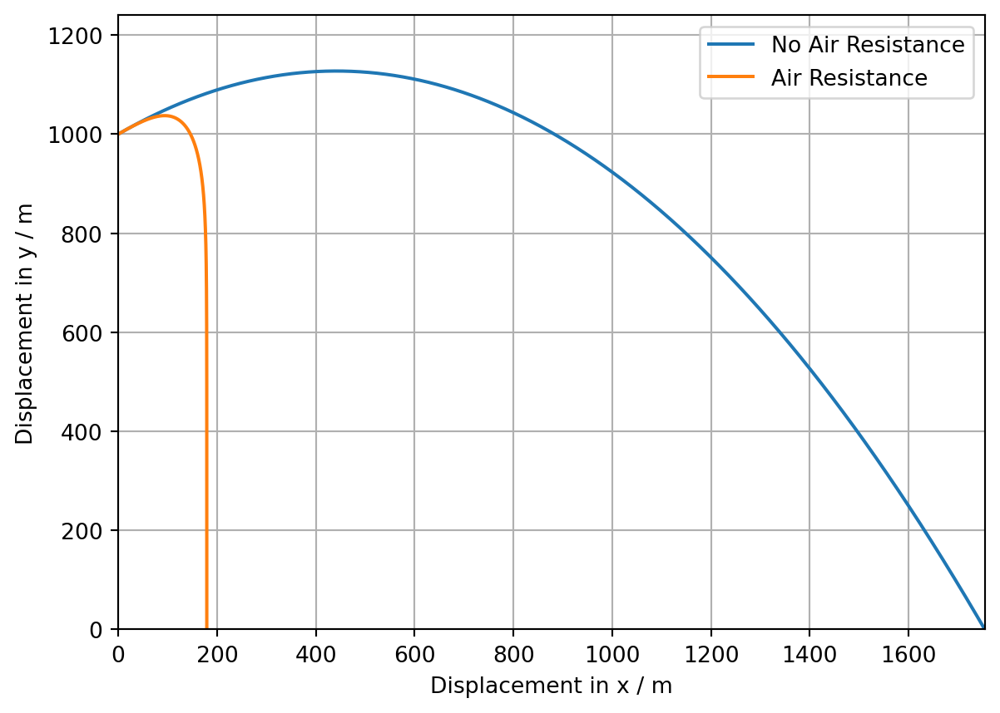

import matplotlib.pyplot as plt
import numpy as np
import mathBPhO Computational Challenge 2024: Challenge 9: Creating a Projectile Model Incorporating Air Resistance Using Verlet Integration
Python
BPhO Computational Challenge
Computational Physics
Projectile Motion
The solution to the ninth challenge of the BPhO Computational Challenge 2024, creating a projectile model incoporating air resistance using Verlet integration for comparison with a drag-free model.
Introduction
The extension of the BPhO Computational Challenge 2024, where the task was to build on the model created in challenge 9 by also considering how the air resistance factor is affected by varying air density with height. By considering the ISA model, we will explore this.
DISCLAIMER: This is just a snippet of our submission for the competition, since the final product was an application 2800 lines of code in length. To see the two minute video submission detailing the entire solution with my partner watch the video here: https://youtu.be/ViT6NdrrbJo .
Setting up the Problem
Imported Libraries
Matplotlib is imported for plotting, numpy for mathematical and trigonometric functions and math for trigonometric functions.
Input Parameters
These are the input values for the program. They are \(\theta\), angle of projection, \(u\), initial velocity, \(g\), acceleration due to gravity, \(h\), intiial height, \(A\), cross-sectional area of the projectile, \(c_{drag}\), the coefficient of drag, \(m\), mass of the projectile, \(dt\), the timestep, and \(\rho\), constant air density for the air resistance model.
# Input parameters
angle = 30
u = 100
g = 9.81
h = 1000
A = 0.002
c_drag = 0.1
m = 0.01
dt = 0.01
density = 1.225The first calculation we must perform is converting the inputted angle in degrees to radians. This is achieved using the equation: \(radian = \frac{degree\times\pi}{180}\)
# Converts the angle to radians
theta = (angle * np.pi) / 180The next calculation involves resolving the launch velocity into horizontal and vertical components of velocity. This is achieved using the following equations: \(u_{x} = ucos(\theta)\) and \(u_{y} = usin(\theta)\)
# Resloves forces into horizontal and vertical component
costheta = math.cos(theta)
sintheta = math.sin(theta)
ux = u * costheta
uy = u * sinthetaNo Air Resistance
This section of code is identical to the code in Challenge 1 & 2 so please refer to that post for greater detail.
# Calculates the range and time of flight of the projectile
R = (u**2 / g) * (sintheta*costheta+costheta*math.sqrt(sintheta**2 + ((2 * g * h) / (u**2))))
tflight = R / (u * costheta)
# Time of flight phrase
print("Time of flight: " + str(round(tflight, 2)) + " s")
# Range phrase
print("Range: " + str(round(R, 2)) + " m")
# Creates an empty arrary for the x and y coordinates of the trajectory
x = []
y = []
# Plots the parabolic path of the projectile with a timestep of 0.01s across an interval of tflight
for i in np.arange(0, tflight, 0.01):
t = i
x.append(ux * t)
T = t * t
y.append(h + (uy * t) - (0.5 * g * T))
# Apogee calculation
apy = (0 - (uy*uy)) / (2 * g * -1) + h
y_graph = apy + apy * 0.1Time of flight: 20.26 s
Range: 1754.37 mAir Resistance
# Calculation for k
k = (0.5 * c_drag * density * A) / m# Creates arrays for air resistance x and y values
x_plot = []
y_plot = []
# Sets initial x and y values
d_x = 0
d_y = h
# Adds initial x and y values to the arrays
x_plot.append(d_x)
y_plot.append(d_y)
# Verlet method to update the acceleration, velocity and position of the projectile after each discrete timestep
n = 0
t_drag = 0
while y_plot[n] >= 0:
t_drag = t_drag + dt
ax = - (ux / u) * k * u**2
ay = - g - (uy / u) * k * u**2
d_x = d_x + ux * dt + 0.5 * ax * dt**2
d_y = d_y + uy * dt + 0.5 * ay * dt**2
x_plot.append(d_x)
y_plot.append(d_y)
ux = ux + ax * dt
uy = uy + ay * dt
u = math.sqrt(ux**2 + uy**2)
n = n + 1# Generates the calculated values text
# Time of flight phrase for drag
print("Time of flight (drag): " + str(round(t_drag, 2)) + " s")
R_drag = x_plot[n]
# Range phrase for drag
print("Range (drag): " + str(round(R_drag, 2)) + " m") Time of flight (drag): 41.15 s
Range (drag): 179.22 m# Creates the figure
fig, ax = plt.subplots()
# Sets the parameters of the plot
ax.set_xlabel("Displacement in x / m")
ax.set_ylabel("Displacement in y / m")
ax.set_ylim(0, y_graph)
ax.set_xlim(0, R)
# Components to be plotted
ax.plot(x, y, label="No Air Resistance")
ax.grid()
ax.plot(x_plot, y_plot, label="Air Resistance")
ax.legend()